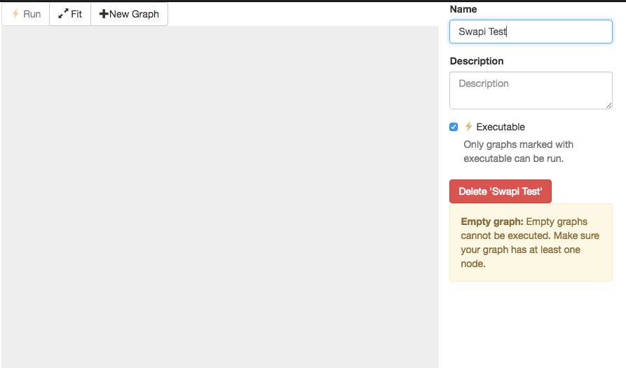
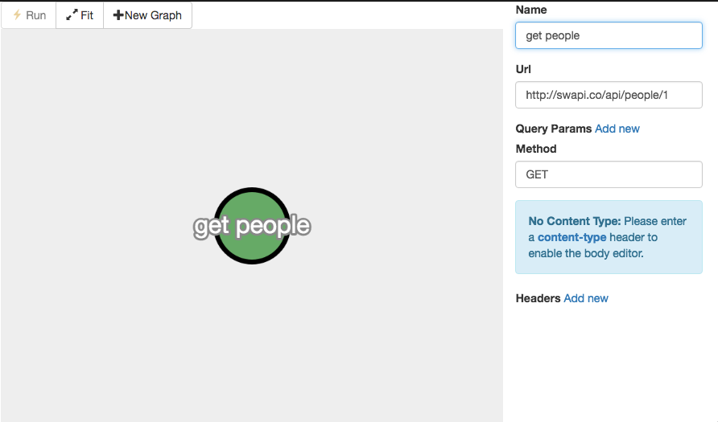
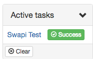
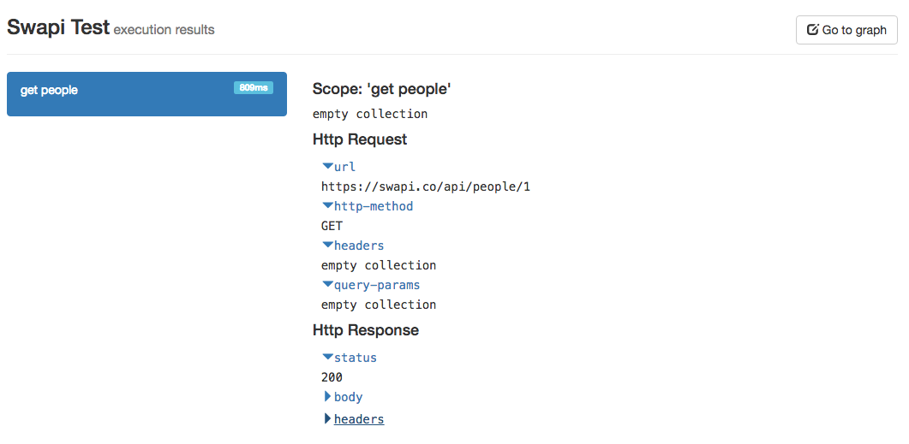
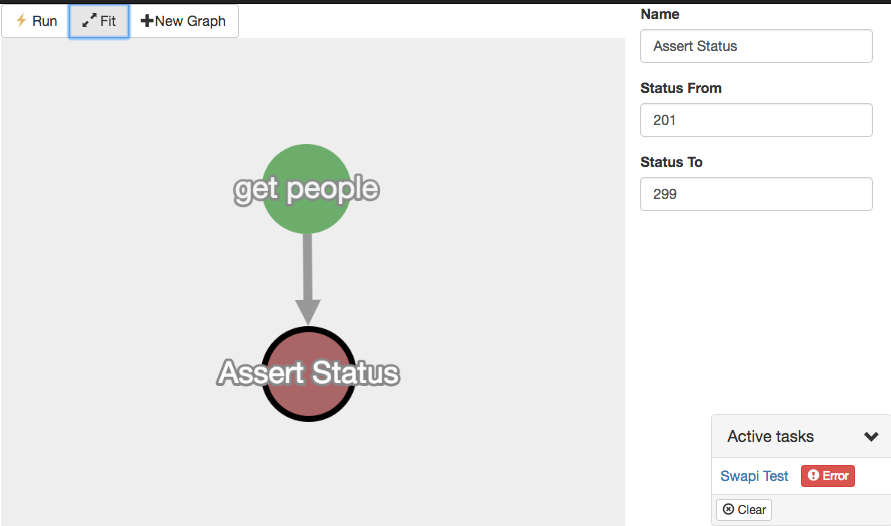
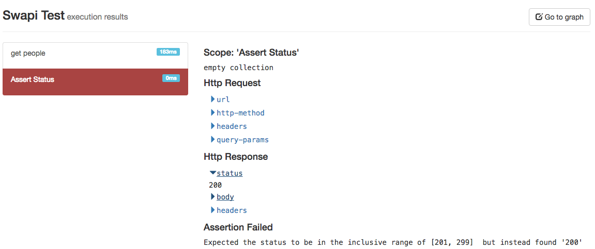
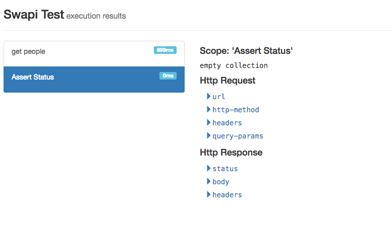

Apibot is a powerful tool for interacting with REST based APIs. If you need to write integration tests for your REST API and don’t know how, you’ve come to the right place.
The purpose of this tutorial is to write a simple program that gets some information from SWAPI (the Star Wars API) and then performs some assertions to make sure that everything works as expected.
It all starts by creating a new graph. In Apibot a graph is analogous to a test, but they are much more powerful. You can think of graphs as programs or as executable Flowcharts
To create a graph click on the New Graph button as shown in the image below and enter a name for your graph. Make sure to click the executable checkbox.
If you don’t enter a name for your graph, the graph’s name will default to the name of the first node in the graph!

Lets get started by adding an Http Request node to the graph, and setting some values as shown in the image below:

At this point we are ready to run our graph. To run, simply click on the Run button. If everything worked as expected you should see a small dialog popup at the button of the screen. We call this the “tasks dialog”. It holds information of the current state of your active tasks.

Click on the Success button. This will take us to the results screen.

The results screen shows the result of executing a graph. You can inspect the Http Request and Http Response to see what you got back from the Star Wars API.
If you expand the Http Response -> Body -> name you will see that we got Luke Skywalker! Hooray! We have made our first successful Http Request with Apibot. Our next step will be to make a test to ensure that the Star Wars API is working as expected. To achieve this click on Go to graph on the top right corner and add an Assert Status node to the graph. We will purposely write a false assertion just so that we can see our API breaking. Click on the Assert Status node and enter status from 201 to 299 and run your graph again.

You can click on the Error link on the tasks dialog to inspect the result.

As you can see, the graph now shows a red Assert Status step. If you click on it you will be able to inspect the error. To fix the error, go back to the graph and change the assert status from 200 to 299.

Success! You’ve written your first test with Apibot! If you click on the Executables link on the top of the screen you will see a table with a single row, your Swapi Test graph.
Graphs can be split into two groups: executables and non-executable graphs. The difference is, as the name suggests, you can only execute (i.e. ‘run’) a graph that has been marked as executables. You can differentiate executable graphs because only executable graphs will be present on the What are executable graphs?
Executables screen.
You’ve written your first Apibot test and are on your way to API automation. On this tutorial you learned: